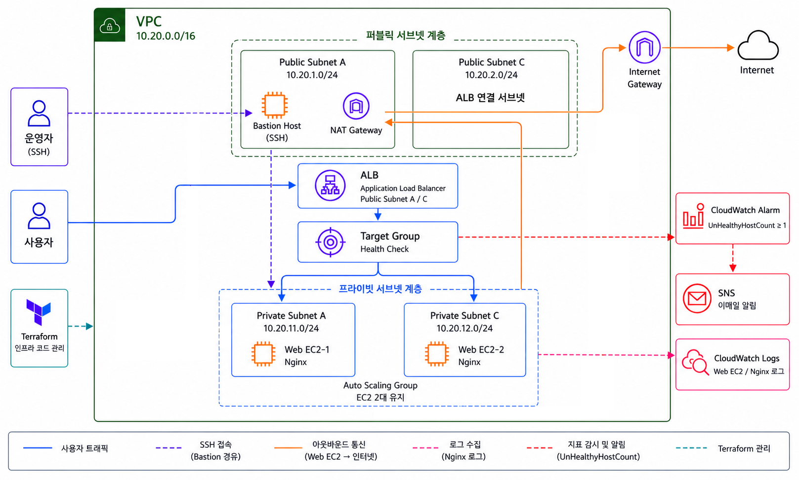

1. 프로젝트를 진행한 이유
1차 EC2 운영 실습을 기반으로 웹 서버를 외부에 직접 노출하지 않고 운영 환경에 더 가까운 구조로 확장하기 위해 진행했습니다.
보안성, 자동 복구, 로그 수집, 알림, IaC와 리소스 정리까지 하나의 운영 흐름으로 연결하는 것을 목표로 했습니다.
2. 전체 아키텍처

3. 사용한 기술과 선택 이유
- VPC / Public·Private Subnet — 외부 요청 경로와 내부 서버 영역을 분리했습니다.
- Bastion Host / NAT Gateway — 관리 접속과 Private EC2의 아웃바운드 경로를 분리했습니다.
- ALB / ASG / Launch Template — 트래픽 분산과 인스턴스 수 유지, 장애 교체를 구성했습니다.
- CloudWatch Logs / Alarm / SNS — 로그 수집과 Target Group 상태 기반 알림을 구성했습니다.
- Terraform — 전체 인프라를 코드로 생성하고 실습 종료 후 삭제했습니다.
4. 구현 흐름
- Terraform으로 VPC와 Public·Private Subnet을 생성합니다.
- Public 영역에 ALB, Bastion Host, NAT Gateway를 배치합니다.
- Private 영역에 Launch Template과 Auto Scaling Group으로 Nginx EC2 두 대를 유지합니다.
- 사용자 요청은 ALB와 Target Group을 거쳐 Private Web EC2로 전달됩니다.
- 운영자는 Bastion Host를 통해 Private EC2에 접속합니다.
- Private EC2는 NAT Gateway를 통해 패키지 설치 등 아웃바운드 통신을 수행합니다.
- Nginx 로그를 CloudWatch Logs로 수집하고 UnHealthyHostCount Alarm을 SNS와 연결합니다.
5. 테스트 결과
- ALB를 통해 Private EC2의 Nginx 페이지가 제공되는지 확인했습니다.
- Bastion Host를 경유해야만 Private EC2에 관리 접속할 수 있는지 확인했습니다.
- 인스턴스를 종료했을 때 ASG가 목표 수량을 맞추기 위해 새 인스턴스를 생성하는지 확인했습니다.
- Target 장애 상황에서 CloudWatch Alarm과 SNS 이메일 알림이 동작하는지 확인했습니다.
- terraform destroy로 실습 리소스를 정리했습니다.
6. 트러블슈팅
Private EC2 패키지 설치 실패
Private Route Table이 NAT Gateway를 향하는지와 NAT가 Public Subnet에 위치하는지 확인했습니다.
ALB Target unhealthy
Target Group 포트, Nginx 실행 상태, EC2 Security Group의 ALB 허용 규칙을 점검했습니다.
Bastion 경유 접속 실패
Bastion과 Private EC2 보안 그룹의 SSH 소스 관계와 키 파일 사용 방식을 확인했습니다.
Terraform 삭제 지연
의존 관계가 있는 NAT Gateway, ENI, Load Balancer가 삭제될 때까지 상태를 확인했습니다.
7. 보안·비용·운영 관점에서 신경 쓴 점
- Web EC2를 Private Subnet에 배치해 직접 인터넷 노출을 줄였습니다.
- 관리 접속 경로와 서비스 트래픽 경로를 분리했습니다.
- ASG와 Alarm을 이용해 자동 복구와 장애 알림 흐름을 구성했습니다.
- Terraform으로 생성·삭제 과정을 기록해 비용 누수를 줄였습니다.
8. 프로젝트를 통해 배운 점
운영 환경에서는 개별 서비스보다 네트워크 경로, 접근 제어, 자동 복구, 로그와 알림이 서로 연결되어야 한다는 점을 배웠습니다. Terraform을 통해 인프라 구성과 정리 과정을 반복 가능하게 관리하는 경험도 얻었습니다.
9. 향후 개선 방향
- NAT Gateway 비용을 고려한 대체 구조와 VPC Endpoint 사용을 검토합니다.
- SSM Session Manager로 Bastion 의존도를 줄입니다.
- CloudWatch Dashboard와 더 구체적인 지표 알람을 추가합니다.
- Terraform 모듈과 원격 State 구성을 적용합니다.